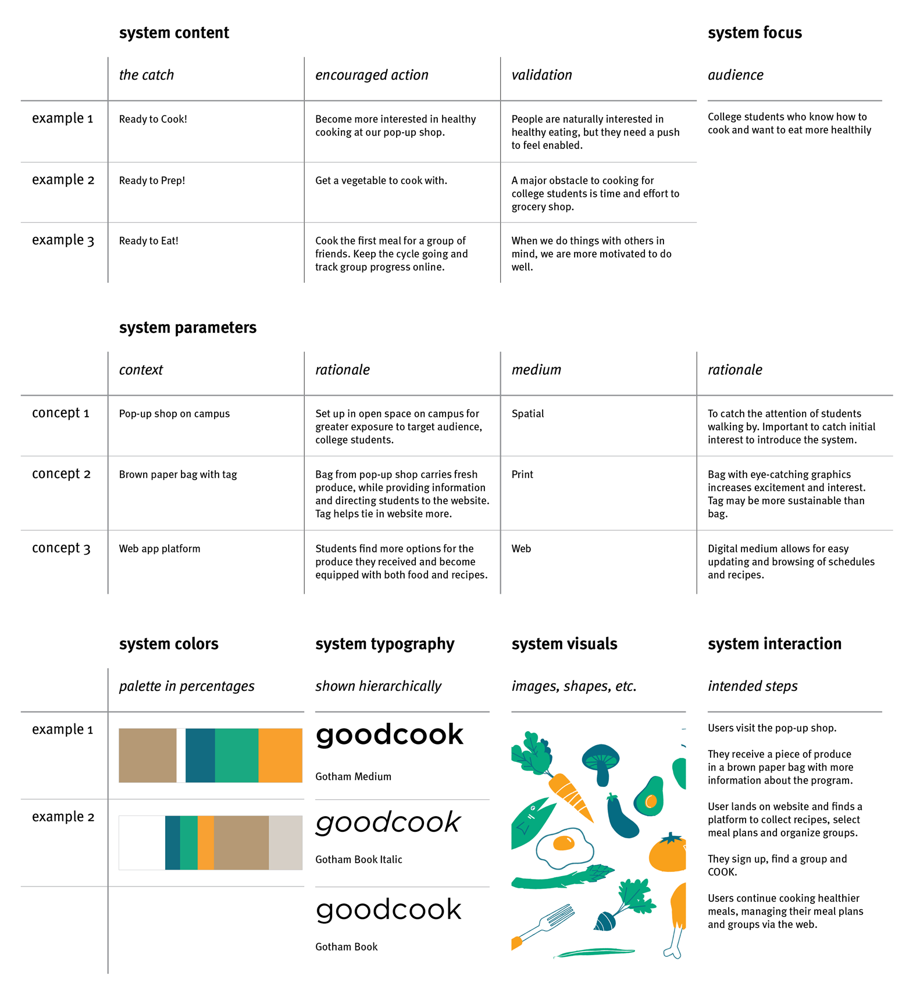

GoodCook
Challenge
One of the most common resolutions ever is to eat a healthier diet, but could we make this lifestyle more approachable and help people build more lasting habits of healthy eating?
Outcome
GoodCook is a program that promotes healthy eating through social interaction and peer accountability. The system is comprised of a spatial, print and digital piece.
Role & Contributions
User research
Concept ideation
Visual language
Teammates
Natalie Harmon
Christie Chong
System Overview
Pop-Up Shop (Spatial)
The pop-up shop is our spatial piece on campus that draws interest and raises awareness about healthy eating and the GoodCook program. Here, students learn about the program and receive our second piece.


Bag (Print)
Our second piece is a paper bag that serves as a takeaway, providing more information about the program's benefits and steps. It comes with a piece of produce and an easy recipe to encourage students to cook with the given ingredients.


Website (Digital)
Our digital piece is a website that includes features for scheduling who's cooking next, health goals, and marking favorite recipes the group has enjoyed together. It is the tool that students will use recurringly, until they make healthy eating into a habit that they do on their own.


Research
Key Findings
We decided that college students like ourselves would be a good target audience, because there was a great need for better eating habits and interesting constraints on a college campus. We conducted interviews with some of our peers to find out how often they felt they ate "well."
We predicted that time and work would be the greatest deterrents from cooking. However, from our research we actually found that students don't cook because they feel incompetent at it. So, we aimed to present cooking as a fun and worthwhile habit for a healthy lifestyle by lowering the intimidation barrier.
We also realized that people are motivated to cook better when they are preparing food for others. We felt that this social aspect is an opportunity to 1. encourage quality cooking and 2. hold accountability. Thus, we decided to create a group cooking program for users and their friends.

Visual Development
Exploration
We tested out many different colors and graphic styles in our process, asking people how each of them made them feel. We sought to create a visual voice that felt fun, playful, and exciting.


In the end we decided on a unique, fresh-looking color palette, vectored graphics for clean edges, and no outlines. This style also worked well with the Gotham font family, which we chose for its round, friendly qualities.
Pattern Design
When we began developing final designs, we split up the production work. I took the above components and created various patterns to be used on our three pieces. I also worked on the copy of the bag to communicate our program's raison d'être in a succint, memorable way.


Style Guide
We consolidated our final decisions into a visual vocabulary style guide. This guide describes our research validation, the context in which each piece exists, and the relationship between our written content and imagery.
Iterations
Pop-Up Shop
We wanted an attention-grabbing spatial piece to utilize our school environment where students would naturally be. We explored a few different forms but ultimately decided that a picnic table would evoke a farmer's market and organicity.


Bag
Bag iterations consisted of testing the size of our graphics when printed and testing our colors on brown paper.


Website
For the website, we mocked up key pages like the dashboard and onboarding to communicate the site's intended functionality. We worked to transfer our patterns from print to a digital platform and keep a cohesive visual language.

Learning Outcomes
- Defining a problem and identifying its constraints, audience, physical context and assumptions going in
- Discerning the differences in designing for long-term use (website) and short-term calls to action (pop-up shop, bag)
- Designing a cohesive system with multiple touchpoints
- Developing a visual voice that is appropriate for an intended message and subject matter
Reflection
If I were to do this project again, I would rework the web and pop-up shop pieces to take better advantage of those particular media. For example, the web experience could be more dynamic, where it is currently being treated like a print piece. I would also like to think deeper about the system of services that would support this program, such as partnerships with local vendors to fund the produce giveaways.